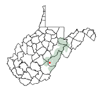

The Landscape
Cranberry Glades is in Pocahontas County, West Virginia. The area is within the Monongahela National Forest (pronounced "moe-non-gah-HEE-lah"). This National Forest sprawls across more than 900,000 acres of West Virginia mountain landscape, and it includes some of the wildest and most beautiful areas of the central Appalachian Mountains.
The topography of the eastern West Virginia mountains consists mostly of broad, gentle slopes and narrow stream valleys. Maximum elevations in the area are about 4500 feet (up to 4860 feet at Spruce Knob, Pendleton County). Local relief (i.e., elevation differences between valleys and nearby peaks) is generally around 1000-1500 feet. Mountaintops frequently are characterized by rounded, flat, or gently rolling terrain. Vast, open scenic vistas are relatively few in number compared to other parts of the country, partly because of the heavy forest cover.
The mountains of West Virginia consist mostly of the eroded Allegheny Plateau -- Pennsylvanian and Mississippian ocean sediments (sandstones and siltstones deposited 359-299 million years ago) that were uplifted about 299-251 million years ago. These rocks are mostly level-bedded (i.e., not tilted or fractured) and have since been carved and dissected by streamwater action, although some folding and faulting occurred in the eastern part of the state. This erosion has produced relatively rugged topography, with deep stream valleys oriented in all different directions (example terrain). To some degree, the topography has been shaped by "periglacial" processes, or the indirect effects of freezing and thawing in areas well south of the direct impact of Ice Age glaciers up until about 12,000 years ago.
The Glades area is fairly remote. The two nearest sizeable towns (Richwood and Marlinton) are each about 15-20 miles away by road. In spite of this remoteness, the area is within a day's drive of numerous population centers in the mid-Atlantic region.
Mountains almost completely surround the Glades valley. The South Fork of the Cranberry River drains out of the northwest opening of the valley, so a trip to the Glades generally involves driving up and over the surrounding ridges and then down into a natural bowl. It's a world unto itself.
Coordinates:
38° 12' (38.20°) N Latitude
80° 16' (80.27°) W Longitude
Magnetic Declination:
In recent years, this has been about 8.7° West. To obtain a current and more precise value, visit the National Centers for
Environmental Information. This is the difference between "magnetic" north and true "geographic" north, which is important when using a simple magnetic compass to navigate in a particular area. (Explanation)
Next: Weather and Climate »